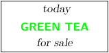

Syntax (autogenerated)
| \defineoverlay[...,...][...][...] | |
| [...,...] | name |
| [...] | name |
| [...] | command |
Syntax
| \defineoverlay[...,...,...][...] | |
| [...,...,...] | name |
| [...] | command |
Description
Define an overlay. The first argument provides the name, the second argument the contents.
The overlay is always centered; if you need something else, you must find a suitable construction.
Example
-
\setupcolors[state=start] \defineoverlay[tea][{\green\ss\bf GREEN TEA}] \framed[ background=tea, align={middle,hilo}, width=.25tw, ]{ \em today \blank[2*big] for sale }
- 
See also
Help from ConTeXt-Mailinglist/Forum
All issues with: